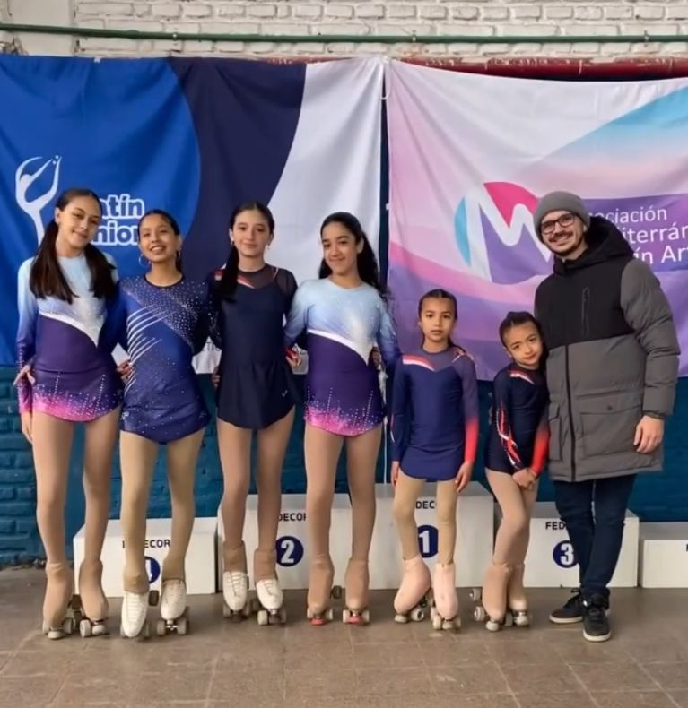
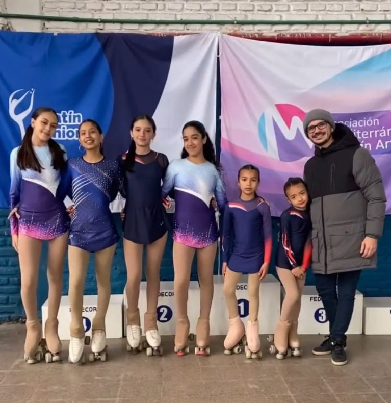

⚽Fútbol
Lunes, miércoles y viernes de 20 a 22hs
¡Transforma tu estilo de vida con Las Palmas! Córdoba, Argentina. Nuestro club te ofrece una comunidad apasionada por el deporte, el bienestar y el crecimiento personal.
Además de contar con mas de 1000 miembros, el club cuenta con una mascota representativa del club, nuestra perrita Sally!
Cada Domingo, los miembros del club se reúnen para disputar partidos en todos los deportes.
El deporte con más hinchada es el fútbol, que siempre atrae a multitudes de seguidores que se agrupan en las gradas con banderas, camisetas y cánticos, creando una atmósfera vibrante y llena de energía.
Sin embargo, otros deportes como el baloncesto, el voleibol y la natación también cuentan con su propia base de aficionados leales, que no dudan en apoyar a sus equipos con el mismo fervor.
Desde nuestra fundación el 10 de julio de 2015, hemos creado un espacio inclusivo donde deportistas de todos los niveles pueden mejorar, aprender y conectarse.
Además de los partidos semanales, el club celebra con entusiasmo su fiesta anual, un evento que reúne a todos los miembros para compartir una noche de diversión, música y camaradería.
Este evento que se realiza en la sede social y se lleva a cabo cada año, se ha convertido en una tradición muy esperada por todos.
Lunes, miércoles y viernes de 20 a 22hs
Martes y jueves de 16 a 18hs
Martes, miercoles, jueves, y viernes de 20 a 23hs
Martes, jueves, y viernes de 17 a 19hs
Martes, miércoles y viernes de 19 a 21hs
Presidenta del club.
Co-presidenta. Campeona regional de triatlón.
Entrenador certificado en voley.
Entrenador certificado en fútbol y preparador físico.
 

Haz clic en el siguiente enlace para jugar:
Ir al juegoDirección: Juan García Martínez 325, Córdoba, Argentina
Teléfono: +54 351 484-1164
Email: secretaria.calp@hotmail.com
Síguenos en nuetras redes sociales:
Facebook
Instagram
Twitter